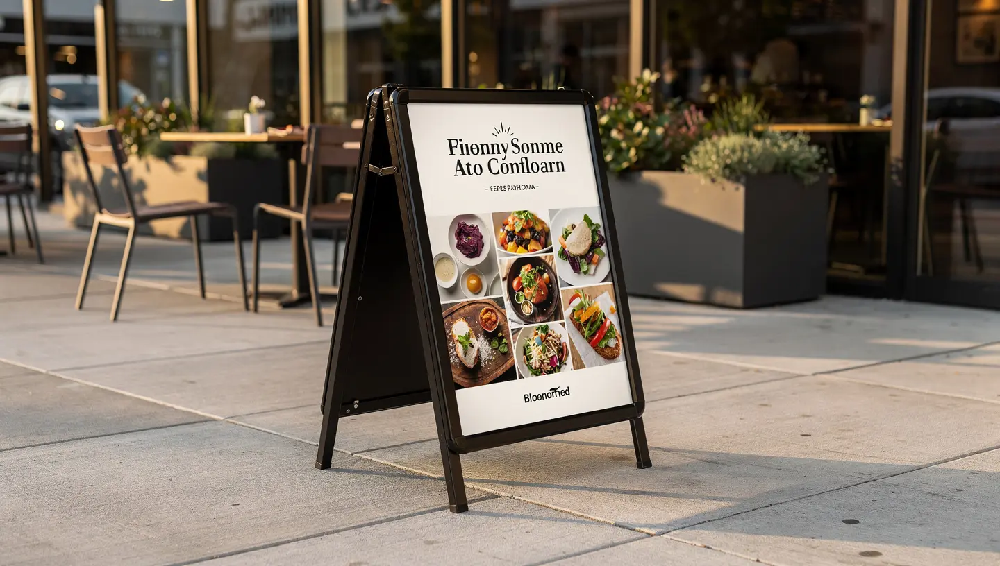
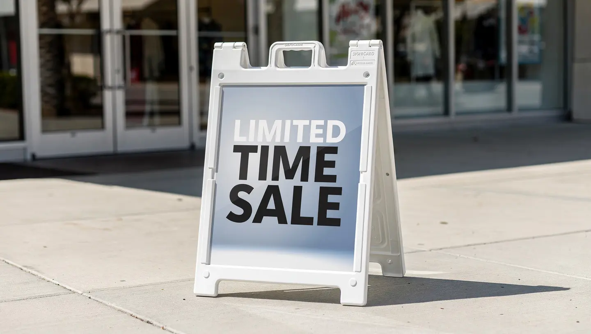

Sidewalk A-frames, Signicade displays, and floor-standing sign holders for storefronts, lobbies, and retail environments across San Jose and the Bay Area.

A-frame signs and sidewalk displays put your message at eye level exactly where people are passing — on the sidewalk, at the entrance, or inside in the lobby. They're easy to move, swap out, and reuse with replacement printed inserts.
We supply the hardware, print the inserts, and can handle local delivery across the Bay Area. If you already have the frame, we can just print new inserts whenever your message changes.

Daily specials, happy hour promos, seasonal menus — a sidewalk A-frame communicates your offer to people walking by before they even reach the door. Inserts swap in minutes.
Hours, promotions, new arrivals, and directional messaging. Plastic Signicade frames are lightweight and weather-resistant — the most common A-frame in California retail and service strip malls.
Floor-standing sign holders in lobbies communicate visitor instructions, event schedules, and wayfinding. Chrome and brushed aluminum frames match corporate interiors without looking temporary.
A-frame signs and sidewalk displays for storefronts, restaurants, offices, and events throughout San Jose and Silicon Valley.